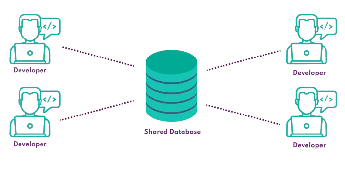
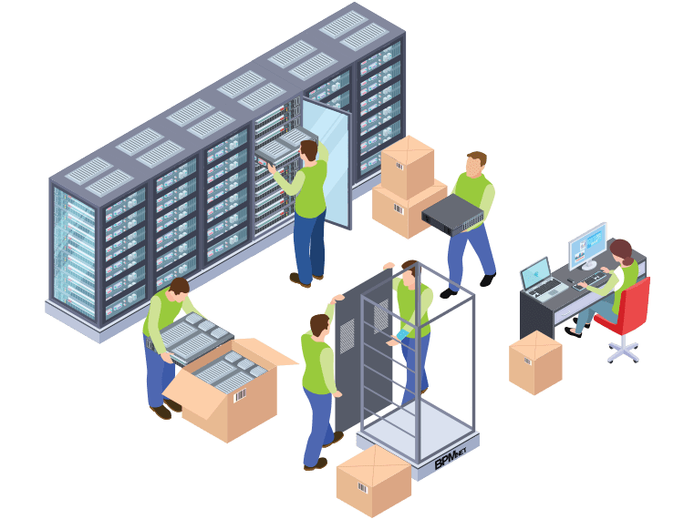

Lors de l'année 2024, un contrat a été passé entre Sikiwis et une société portant sur la livraison de
trackers GPS pour équiper une flotte de véhicules.
Les missions qui m'ont été attribuées ont concerné l'inventaire, l'activation et le paramétrage des SIM
et des capteurs GPS.
Support logiciel sur les ERP
L'activité principale de Sikiwis consiste en l'évaluation des besoins d'un client, la conceptualisation
d'une suite logicielle, sa conception et sa livraison.
Toutefois, au delà de cette phase, un suivi est assuré concernant l'évolutivité des plateformes ou la
survenue d'éventuels bugs.
Configuration d'un domaine
Afin d'assurer la centralisation de ses données, l'utilisation de ressources numériques est
indispensable, en passant notamment par la conception d'un SI sécurisé et
sur mesure.
Configuration d'un serveur partagé de base de données
Afin d'assurer un meilleur fonctionnement et d'améliorer la productivité, la mise en place d'un serveur
partagé de base de données MySQL a été décidée, afin que chaque
programmeur puisse se mettre à jour facilement, et qu'une plateforme de test soit intégrée en local.


Déménagement des installations réseaux
En Septembre 2024, la société Sikiwis a pris la décision de déménager ses locaux. Un des enjeux de ce
déménagement est
d'impacter le moins possible les activités de l'entreprise, notamment en ce qui concerne le
développement de solutions
logicielles, et de retrouver un réseau fonctionnel immédiatement.
Rétablissement d'images Docker
A la suite de l'interruption des serveurs d'un prestataire, un client ne peut plus utiliser une
application développée par Sikiwis.
A distance, les équipes de Sikiwis ouvrent les ports et rétablissent les services nécessaires.
Configuration d'un serveur IA
En Janvier 2025, la société Sikiwis a pris la décision de configurer un serveur IA, alimenté
avec les données de l'entreprise et de la législation en vigueur afin d'aider à augmenter la
productivité dans ses activités paie.
Configuration d'un serveur de ticket et d'inventaire : GLPI
A la suite de l'installation d'un serveur physique NAS, la société Sikiwis,
afin de centraliser la gestion de son parc informatique et des tickets d'incidents,
a procédé à l'installation et à la configuration d'un serveur GLPI.